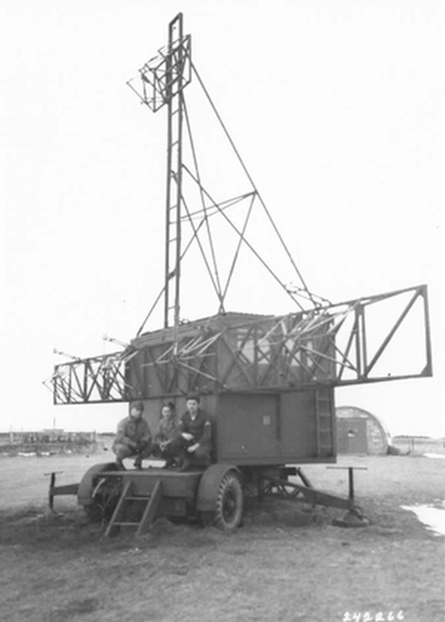
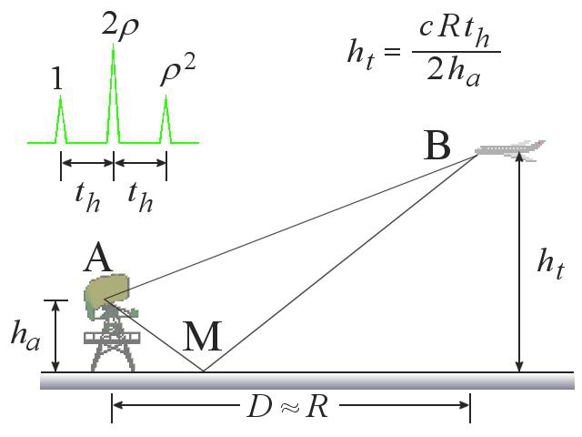
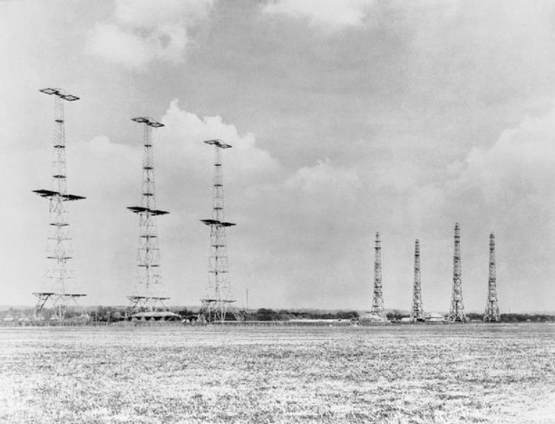
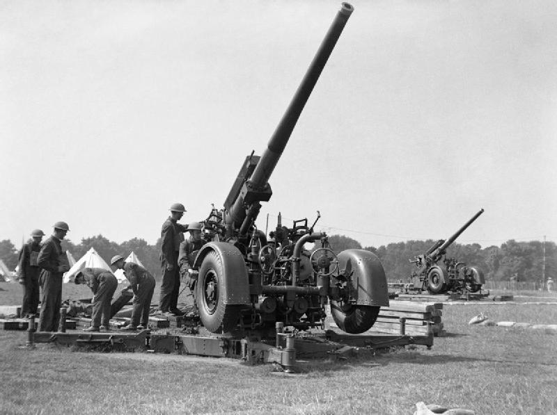
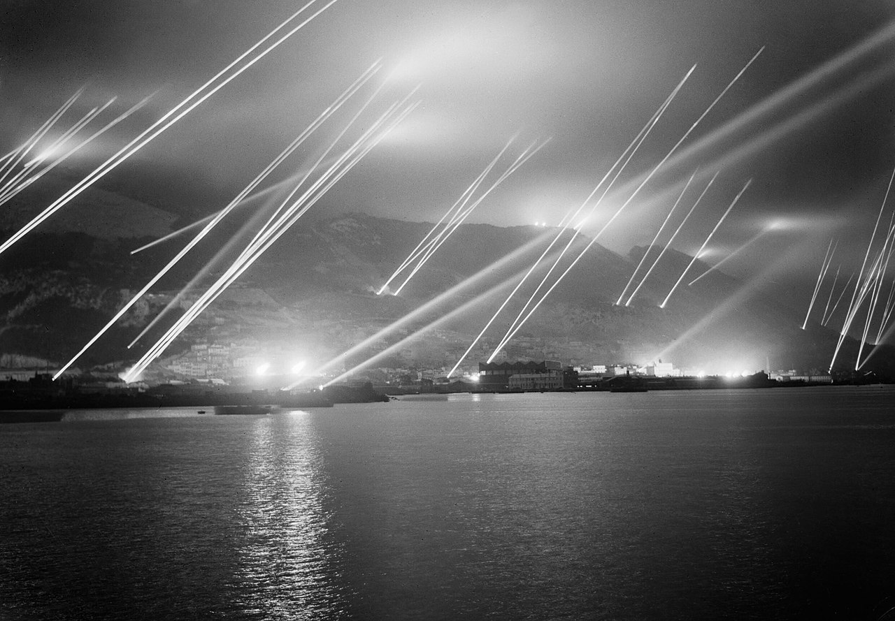
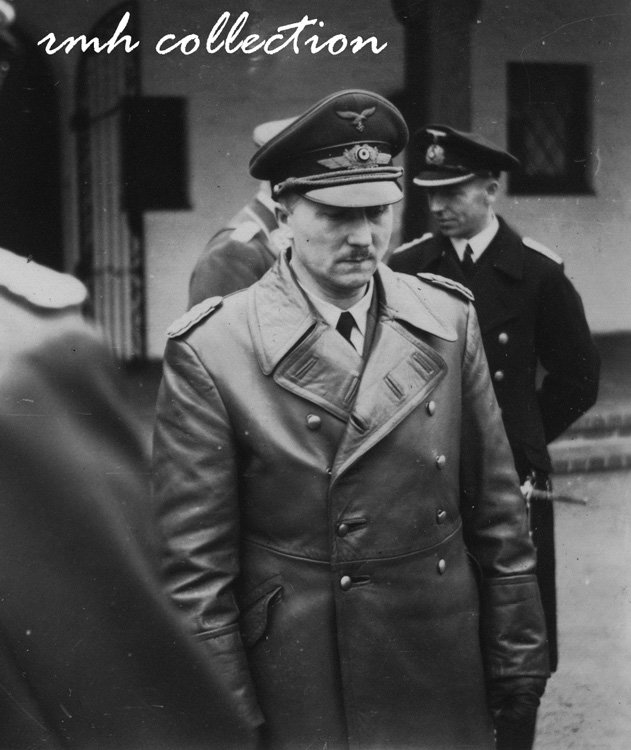
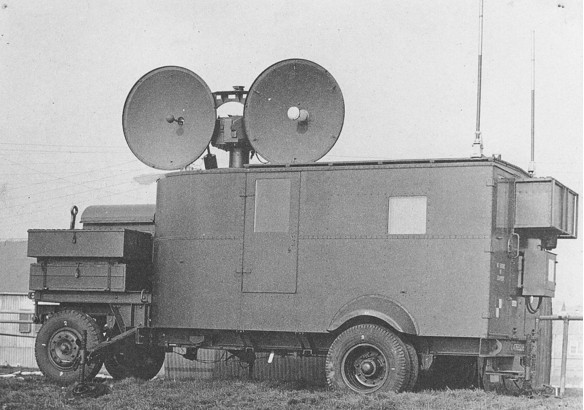

레이더 개발 이야기 (9) - 공군은 하는데 육군은 왜 못해?
게시: 2022-11-10T06:30:46+09:00
<앙꼬가 빠진 찐빵, 고도를 못 재는 대공포용 레이더> 영국 육군이 육군 소속 레이더 연구팀인 Army Cell 에게 요구한 spec은 매우 간단. 약 13km 거리에 떨어진 항공기까지의 거리를 50 야드 (46m) 오차 이내로 알아내라는 것. 실은 그것이 초창기 레이더가 가장 잘 할 수 있었던 것이었으므로 이 과제는 어렵지 않게 1939년까지 해결하여 최초의 이동식 대공포용 레이더인 GL (Gun Laying) Mark I이 양산에 들어감. GL Mk I은 송신용 안테나와 수신용 안테나, 그리고 야전용 발전기가 분리되어 각각 별도의 야포용 포가 위에 얹을 수 있도록 만들어졌으므로 가벼웠고 전기도 50kW 정도 밖에 먹지 않았음.

(이건 1940년 이후에 나온 개량형 레이더 GL Mk II의 송신 안테나 장치) 그러나 사실 대공포가 정확한 사격을 하기 위해서 알아내야 하는 것은 적기까지의 거리라기보다는 적기까지의 고도. GL Mk I은 적기까지의 거리만 알아낼 수 있었을 뿐, 고도는 전혀 알 방법이 없었음. 공군의 레이더는 고도도 꽤 정확하게 알아낼 수 있었으나 육군 레이더는 왜 그러지 못했을까? 공군 애들이 치사하게 비결을 알려주지 않은 것일까? 아님. 이건 규모의 문제였음. 로열 에어포스의 초기 레이더인 Chain Home 시스템이 적기의 고도를 알아낸 것은 수신 안테나가 엄청나게 높은 탑에 걸려 있었기 떄문에 가능했던 일. 당시 공군이 쓰던 10m가 넘는 장파는 적기 뿐만 아니라 대지에 부딪히면 빛처럼 반사가 되었는데, 적기에서 곧장 날아온 반사파와 대지에 한번 부딪혀 two 쿠션으로 날아온 반사파와는 약간의 시간 차이가 발생. 그리고 적기의 고도가 높을 수록 그 시간 차이가 벌어지므로 그 시간 차이를 측정하면 (적기와의 거리는 레이더를 통해 알 수 있으므로) 적기와 지상의 반사각도 계산이 가능. 그런데 그 시간 차이는 수신 안테나와 대지와의 거리가 멀면 멀 수록 커지므로 더 정확한 거리 측정이 가능. (그림2)

(저 공식은 나로서는 잘 이해가 안 가는데 혹시 이해하시는 분 있으면 좀 더 쉽게 설명해서 댓글에 설명 좀 부탁요. 원본은 https://www.radartutorial.eu/01.basics/rb63.en.html 입니다.) 기억들 하시겠지만 Chain Home 시스템 사진(그림3)에서 왼쪽의 송신 안테나 타워, 오른쪽이 수신 안테나 타워인데, 전파 간섭을 막기 위해 순수 목재로만 만든 저 수신 안테나 타워의 높이는 대략 73m.

야포용 포가에 얹어서 이동시켜야 하는 육군의 이동식 레이더 GL Mark I의 안테나는 높아봐야 4~5m 정도의 높이. 게다가 저 대지 표면에서 튕긴 2차 반사파를 이용한 고도 측정은 공군 레이더 사이트처럼 주변 대지 표면이 꽤 넓고 또 고르게 평평해야 써먹을 수 있는 측정 방법. 야전에서 그런 것을 기대하기는 좀 어려웠음. 따라서 육군에서는 적기의 정확한 고도 측정은 아예 포기. 잠깐. 애초에 육군이 레이더를 원한 것은 적기와의 거리 측정이 아니라 고도 측정 때문이 아니었던가? 그런데 그걸 포기한다고? 왜? 간단했음. 적기를 그냥 눈으로 보고 적기와 대지 사이의 각도를 광학측정기로 재면 됨. 기존 광학 거리측정기에서 문제가 되었던 것은 거리 측정의 정확도였을 뿐, 수직 각도이건 방위각이건 그냥 눈으로 보고 측정하면 됨. 레이더를 이용하면 더 멀리서 측정할 수 있지 않냐고? 필요없음. 고사포 사정거리가 어차피 수 km로서 눈으로 보이고 난 한참 뒤에 사격을 시작해도 전혀 늦지 않았음.

(WW2 당시의 영국 육군 대공포 QF 3.7-inch AA. 최대 사정거리는 빗변 10km 정도.) 그러나 결국 육군은 공군과 동일한 문제로 되돌아 가게 됨. 그것은 바로... <뜻밖의 공로> 공군도 Chain Home 레이더를 준비하면서 '레이더가 위력을 발휘해서 독일 폭격기들이 추풍낙엽처럼 격추된다면 독일공군은 틀림없이 야간 폭격으로 전술을 바꿀 것'임을 예상하고 전투기에 야간 추적용 레이더를 장착할 준비를 시작. 육군도 처음에는 GL Mk I의 약점인 고도 측정 불가능에 대해 아무 생각없이 '괜찮아, 눈으로 보고 재지 뭐'라고 했다가 독일공군이 야간 폭격으로 전술을 바꿀 거라는 예상을 공군으로부터 전해 듣고 당황. 그러나 공군과는 달리 육군은 믿는 구석이 있었음. 바로 탐조등. 야간 폭격은 WW1 때부터 수행되던 것이었고 영국 육군은 그때부터 강력한 탐조등을 써서 적기를 포착.

(사진1은 1942년 방공 훈련 중인 지브랄타 수비대의 탐조등.) 문제는 엔진 소리만 듣고 탐조등으로 폭격기를 찾기에는 밤하늘이 너무나 넓고 탐조등 불빛은 너무나 작다는 것. GL Mk I 레이더가 대충 어느 방향에 폭격기가 있다는 것만 알려줘도 훨씬 쉬웠을텐데 GL Mk I은 공군 레이더의 미니 버전이다보니 전파방위계(radiogoniometer)도 안 달려있어 방위각도 제대로 탐지하지 못했음. 그래도 반(半)지향성 안테나를 썼던 GL Mk I에 걸리면 최소한 대충 동쪽에서 오는지 남쪽에서 오는지는 알 수 있었으므로 도움이 될 거라고 생각했으나, 부채살 모양의 레이더 빔 각도가 20도 정도로 컸기 때문에 그것만으로는 탐조등이 폭격기에 락온(lock-on)하는 것에는 별 도움이 되지 않았음. 결과적으로 GL Mk I은 야간 방공망에 거의 도움이 되지 않았고, 여기에 큰 기대를 걸던 방공포 부대는 이 레이더의 성능에 크게 실망하고 스트레스만 받음. 그러나 GL Mk I이 도움이 된 부분도 있음. 1939년만 해도 영국 육군은 이 레이더에 크게 만족하여 프랑스 전선으로 파견된 육군 원정대에도 수십대의 GL Mk I을 딸려 보냄. 그런데 이 원정대가 탱크고 야포고 다 버리고 덩케르크에서 철수할 때 이 레이더도 거의 그대로 버리고 옴. 이렇게 GL Mk I은 고스란히 독일 공군의 레이더 개발 책임자인 Wolfgang Martini (사진2)의 손에 들어갔는데, 이걸 평가해본 마르티니는 '영국 레이더의 기능과 품질은 우리가 예상한 것보다 훨씬 수준 이하'라고 결론을 내리고 영국 공군의 Chain Home 레이더 사이트를 주요 공격 대상으로 삼지 않음.

(독일 공군의 레이더 개발 책임자였던 볼프강 마르티니는 영국 공군의 레이더 역량 탐지를 위해 WW2 발발 직전, 제펠린 비행선을 직접 타고 영국 동해안 지역을 비행하며 Chain Home 레이더의 전파를 수집. 그러나 그때도 아무 전파를 탐지하지 못하여 '영국 레이더 기술은 수준 이하'라는 결론을 내렸다고. 처칠은 회고록에서 '그 제펠린 비행선이 접근했을 때 우리 레이더는 스위치를 내렸다'라고 썼지만 실은 그것도 사실이 아니고 영국 레이더는 제펠린 비행선을 정확히 추적. 제펠린에서 영국 레이더의 전파를 탐지 못한 것은 독일 측의 기술상 실수 때문이었다는 것이 정설. 아무튼 그는 전후에도 전범으로 기소되는 일 없이 엔지니어로서의 삶을 계속. 그는 독일이 패망에 접어들자, 그동안 독일이 개발했던 레이더 관련 기술이 혼란 속에 사라질까 염려하여 금속제 용기에 관련 기술 문서들을 넣어 감춰 두었는데, 그 지역에 하필 소련군이 진주. 본인은 미군을 찾아 서쪽으로 탈출하여 거기서 미군에게 항복. 1951년에 그는 결국 소련 점령 지역까지 넘어가서 그 문서함을 찾아 돌아왔다고.) 결국 1941년에 들어서 Leslie Bedford가 고안한 수직 안테나와 그 전파방위계(radiogoniometer)를 이용한 고도 및 방위각 측정 장치가 더해지면서 비로소 GL (Gun Laying) 뿐만 아니라 EF (Elevation Finding)까지 갖춘 GL/EF Mk II가 탄생. Mk II의 배치와 함께 영국 방공포대의 효율은 레이더 이전의 2만발당 1대 격추에서 2750 발당 1대 격추로 급격히 좋아짐. 그러나 진짜 물건은 1940년에 들어 영국에서 개발된 공동 마그네트론 (Cavity magnetron)이 실용화되면서 cm 단위의 초단파를 쓸 수 있게 되면서 만들어진 GL Mk III (아래 사진3)인데, 이건 1942년 들어서야 도입됨.

육군의 대공포용 레이더 개발사는 대충 여기까지. 그러나 이 GL Mk 시리즈는 육군보다도 공군이 항공기 탑재용 레이더를 개발하는데 매우 중요한 디딤돌이 되었음. 그 이야기는 다음 번에.